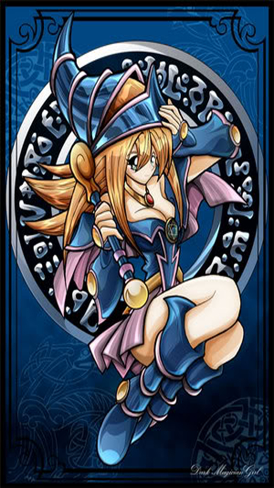
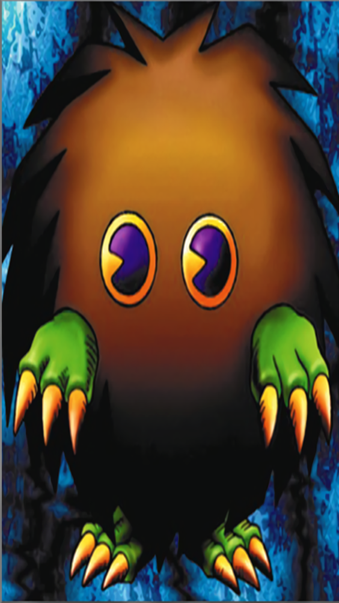
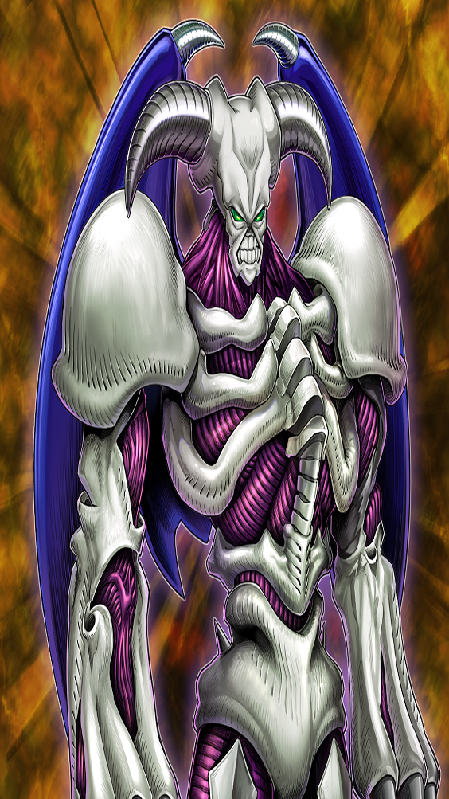
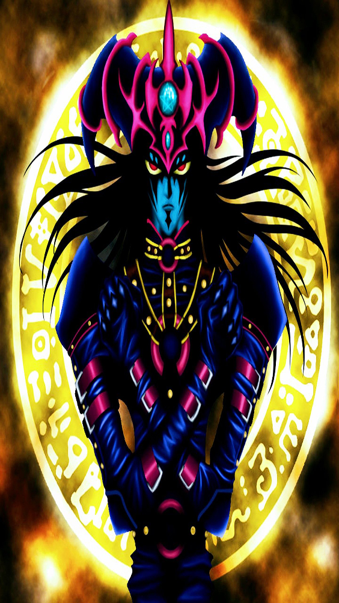
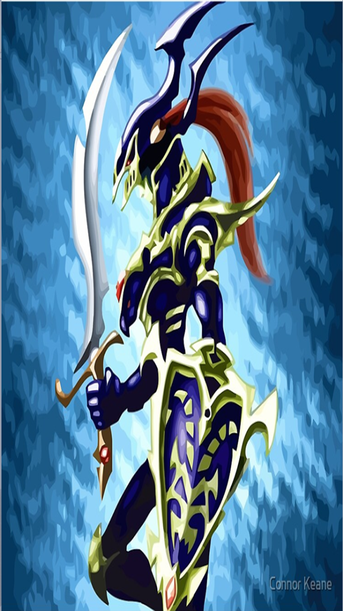
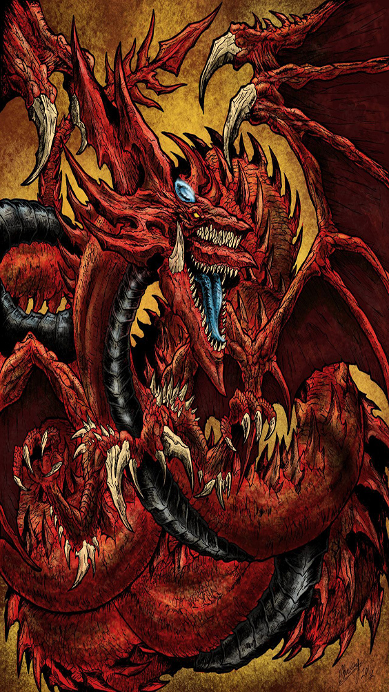
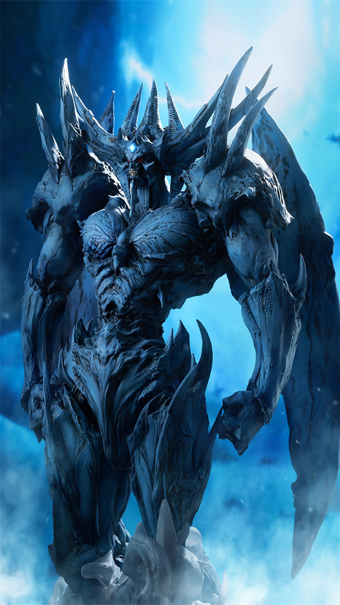

-

Mago Negro
[Mago]
ATK - 2500
DEF - 2100- Mago definitivo em termos de ataque e defesa.
-

Pequena Maga Negra
[Mago]
ATK - 2000
DEF - 1700- Ganha 300 de ATK para cada "mago Negro" ou "Mago do Caos das Trevas" no Cemíterio.
-

Kuriboh
[Demônio]
ATK - 300
DEF - 200- Durante o turno do seu oponente, no cálculo de dano:você pode descartar este card: você não sofre dano de batalha desta batalha (este é um Efeito Rápido).
-

Rei Caveira
[Demônio]
ATK - 2500
DEF - 1200- Um demônio com poderes das trrevas para confundir o inimigo. Entre os mostros do tipo demônio,é dos masi fortes. (Este card deve ser sempre considerado como um card "arquidemônio".
-

Mago do Caos
[Demônio]
ATK - 2800
DEF - 2600- Você pode invocar este card por Invocação-Ritual com "Ritual de Magia Negra".
-

Soldado Do Lustro Negro
[Guerreiro/Ritual]
ATK - 3000
DEF - 2500- Você pode invocar este card por Invocação-Especial com "Ritual do Lustro Negro".
-

Espadas Da Luz Reveladora
[Magia]
- Depois da ativação deste card, ele permanece no campo, mas destrua-o durante a Fase Final do 3º turno do seu oponente. Quando este card for ativado: se seu oponente controlar um monstro com a face para baixo, vire com a face para cima todos os monstros que ele controla. Enquanto este card estiver com a face para cima no campo, os monstros do seu oponente não podem declarar um ataque.
-

Slifer, o Dragão Celeste
[Besta Divina/Efeito]
?
?- Requer 3 Tributos para ser Invocado por Invocação-Normal (não pode ser Baixado Normalmente). A Invocação-Normal deste card não pode ser negada. Quando Invocado por Invocação-Normal, cards e efeitos não podem ser ativados. Durante a Fase Final, se este card foi Invocado por Invocação-Especial: envie-o para o Cemitério. Este card ganha 1000 de ATK e DEF para cada card em sua mão. Quando um ou mais monstros forem Invocados por Invocação-Normal ou Especial no lado do campo do seu oponente com a face para cima em Posição de Ataque: esses monstros perdem 2000 de ATK e DEF, depois, se qualquer um deles tiver o ATK ou DEF reduzido a 0 como resultado deste efeito, destrua-o.
-

Obelisco, o Atormentador
[Besta Divina/Efeito]
ATK - 4000
DEF - 4000- Requer 3 Tributos para ser Invocado por Invocação-Normal (não pode ser Baixado Normalmente). A Invocação-Normal deste card não pode ser negada. Quando Invocado por Invocação-Normal, cards e efeitos não podem ser ativados. Não pode ser alvo de Magias, Armadilhas ou efeitos de card. Durante a Fase Final, se este card foi Invocado por Invocação-Especial: envie-o para o Cemitério. Você pode oferecer 2 monstros como Tributo: destrua todos os monstros que seu oponente controla. Este card não pode declarar um ataque no turno em que este efeito for ativado.
-

O Dragão Alado de Rá
[Besta Divina/Efeito]
ATK - ?
DEF - ?- Não pode ser Invocado por Invocação-Especial. Requer 3 Tributos para ser Invocado por Invocação-Normal (não pode ser Baixado Normalmente). A Invocação-Normal deste card não pode ser negada. Quando Invocado por Invocação-Normal, outros cards a efeitos não podem ser ativados. Quando este card for Invocado por Invocação-Normal: você pode pagar Pontos de Vida até ter apenas 1 restantes; este card ganha ATK e DEF igual ao valor de Pontos de Vida pagos. Você pode pagar 1000 Pontos de Vida e, depois, escolher 1 monstro no campo; destrua o alvo.